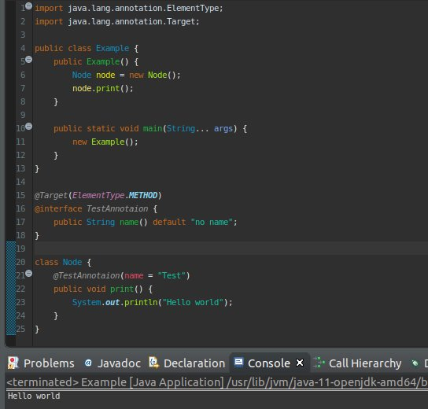
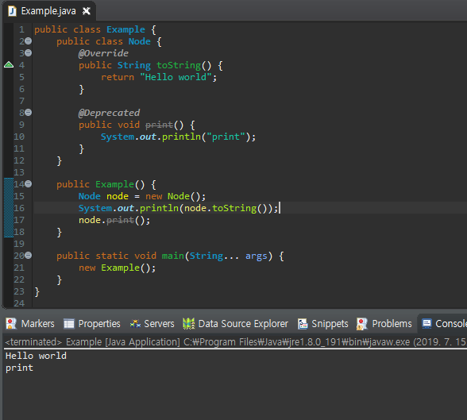

こんにちは。明月です。
このページではアノテーション(annotation)に関して調べてみました
JavaのアノテーションはC#のアトリビュートと似てる意味になります。
Link - [C# スタディ - 34] Attribute(アトリビュート)
アノテーションとはクラス、メソッド、変数なのでメタデータ、あるいはデータの正義するデータと言います。
つまり、アノテーションデータとしては実施にプログラムの実行で使えるデータではなく、クラス、メソッド、変数のデータを区分するようなデータだといいますね。C#側ではアトリビュートのデータを使うことがありますがそのことと少し差異があります。
class Node {
// 再正義の意味のアノテーション
@Override
public String toString() {
return "Hello world";
}
// 使用禁止を明示するアノテーション
@Deprecated
public void print() {
System.out.println("print");
}
}
上の「Override」、「Deprecated」アノテーションはJavaプログラムで一番よく見るアノテーションですね。
詳しく説明すると「Override」アノテーションはクラスが経書された時にメソッドを再正義を明示する時に使うアノテーションです。
「Deprecated」は実際にメソッド削除をできないし(様々で使うところがありコード変更がすごく必要な状況)、これからメソッドを使えないように使うアノテーションです。

「Override」と「Deprecated」は基本的にJavaにあるアノテーションです。
では、実際にアノテーションを使うと言うとクラスやインタフェースみたいにアノテーションを生成して使いますね。
import java.lang.annotation.ElementType;
import java.lang.annotation.Target;
public class Example {
public Example() {
Node node = new Node();
node.print();
}
public static void main(String... args) {
new Example();
}
}
//アノテーション
@Target(ElementType.METHOD)
@interface TestAnnotaion {
public String name() default "no name";
}
// クラス
class Node {
@TestAnnotaion(name = "Test")
public void print() {
System.out.println("Hello world");
}
}

上の例をみれば「TestAnnotaion」の名のアノテーションを生成しました。「Target」のアノテーションを利用して「METHOD」を選択しまいたが、「ALL」を選択すると全ての形で使えるし、「CLASS」を選択するとクラスで、「FIELD」を選択すると変数で使えるアノテーションを作られます。
上の例では「METHOD」を選択しましたので「Node」クラスで「print」関数でアノテーションを選択しました。
アノテーションの設定に関してはここまでですが、ただアノテーションだけではなぜこの設定をするかを理解しにくいですね。
アノテーションは様々なフレームワークやライブラリでたくさん使われますが、なんのため設定するかを意味を知らない場合があります。
ライブラリでクラスを読み込む時に設定のために使われますが、この部分は「Java」の「Reflection」と関係があるので、その時に詳細に説明します。
link - 作成中
- [Java] Java servletでインスタンスを初期する方法2019/10/17 07:15:48
- [Java] Spring web frameworkで発生する文字化けのEncoding設定2019/10/16 07:32:55
- [Java] Web Spring frameworkでfilter設定2019/10/15 20:12:35
- [Java] Web serviceのweb.xmlでエラーページ設定2019/10/14 20:13:44
- [Java] JPAのDAOをFactoryパターンで管理する方法2019/10/13 22:55:52
- [Java] JPAのSpring frameworkで依存性注入する方法2019/10/13 00:40:08
- [Java] JPAでDAOを生成する方法2019/10/11 07:30:14
- [Java] JPAでトランザクションの使用方法とオブサーバーパターンで共通トランザクション関数を作り方2019/10/10 07:29:43
- [Java] JPAのQuery を作り方2019/10/09 07:34:08
- [Java] JPAのEntityクラス設定(Cascade, fetch)2019/10/08 07:43:33
- [Java] JPAでpersistance.xml設定とentityクラス設定(@GeneratedValue設定)2019/10/07 07:38:13
- [Java] EclipseでJPAフレームワーク設定する方法2019/10/04 19:24:43
- [Java] Web spring frameworkのJSPで使う言語 JSTL - XML2019/10/03 20:02:06
- [Java] Web spring frameworkのJSPで使う言語 JSTL - 関数、データベース2019/10/02 21:00:22
- [Java] Web spring frameworkのJSPで使う言語 JSTL - コアー、フォーマッティング2019/10/01 21:48:08
- [C#] HttpWebRequestを利用してウェブページを読み込みする方法2020/03/27 00:23:19
- [C#] Base64のエンコード、デコードする方法2020/03/26 02:19:50
- [Java] 日付フォーマット(SimpleDateFormat)を使う方法2020/03/25 00:36:53
- [Java] サーブレット(Servlet)の環境でファイルアップロード(プログレスバーでファイルアップロード状態を表示する方法)する方法2020/03/24 00:48:21
- [Java] Spring環境でファイルアップロード(プログレスバーでファイルアップロード状態を表示する方法)する方法2020/03/22 23:15:12
- [Java] FTPに接続してファイルをダウンロード、アップロードする方法(FTPClient)2020/03/20 02:44:36
- [Window] WindowでFTPサーバを構築する方法2020/03/19 03:27:22
- [Java] JSPのSpring環境でschedulerのcronを使う方法2020/03/18 00:24:32
- [Java] POIを利用してExcelを扱う方法2020/03/17 01:48:00
- [Java] PDFを出力する方法(itextpdf)2020/03/13 00:47:31
- [Java] ログライブラリ(log4j)を使う方法2020/03/12 00:54:39
- [Java] Jsonタイプのデータを使う方法(Gsonライブラリ)2020/03/11 00:30:15
- [Java] Base64をエンコード、デコードする方法2020/03/09 10:24:01
- [Java] cmdコマンドを実行するための方法2020/03/06 18:01:10
- [Java] メール(javax.mail)を発送する方法2020/03/05 20:07:49